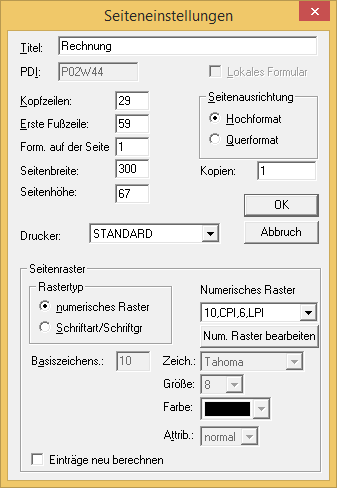

Definition der Größe
Jedes Formular besteht aus einem Kopfteil, einem Mittelteil und einem Fußteil. Die Größe des Kopfteils wird im Eingabefeld "Kopfzeilen" bestimmt. Der Beginn des Fußteils wird im Eingabefeld "Erste Fußzeile" eingetragen. Die Höhe des Mittelteils ergibt sich aus dem verbleibenden Zwischenraum. In diesem Beispiel beginnt der Mittelteil bei Zeile 30 und endet bei Zeile 58.

Ändern des Titels
Die Änderung der Titelinformation hat keinen Einfluss auf die Überschrift, welche auf dem Formular erscheint. Die Überschrift ist ein statischer Text, der als solcher in das Formular eingefügt wurde. Die Änderung des Titels erleichtert aber die Suche, da in der Liste der Formulare auch nach Titel sortiert werden kann.
ü Im Eingabefeld "Titel" geben Sie "RECHNUNG" ein. Diesen Text sollten Sie auch als Überschrift auf dem Formular verwenden.
ü Aktivieren Sie nun im Optionsfeld "Seitenausrichtung" die Option "Querformat". Damit formatieren Sie das Formular im Querformat.